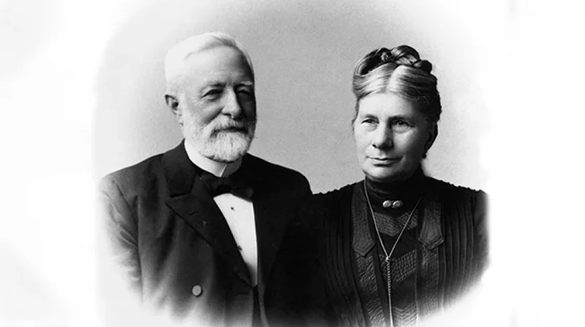

История Maersk началась с дико парадоксальной ситуёвины, когда в 1886-м, жена капитана Петера Мёллера вдруг свалилась от какой-то тяжелой болезни. И мужик в панике давай со всей дури молиться и в конце молитвы взял и попросил у Боженьки какой-то знак, ну типа чтобы понять, что коннект с создателем активировался, и его хотелка услышана.
Ярчайшая звезда (h2.)
И тут ему прямо посреди абсолютно беспросветного и затянутого тучами неба внезапно пробурилась аж целая аж ярчайшая звезда.
Кстати, если вам не нравится такой стиль текста, эту же историю можно посмотреть на ютубе в супер интеллигентном и высокоинтеллектуальном стиле.
И спустя год, когда Петер наконец дорвался до командования своим первым пароходом, он взял и намалевал на дымовой трубе синюю полосу, а поверх нее белую семиконечную звезду.

Маркированный список (h3.)
И тут ему прямо посреди абсолютно беспросветного и затянутого тучами неба внезапно пробурилась аж целая аж ярчайшая звезда:
- И спустя год, когда Петер наконец дорвался до командования своим первым пароходом, он взял и намалевал на дымовой трубе синюю полосу, а поверх нее белую семиконечную звезду.
- И сделал он это, чтобы на постоянке для всех висела напоминалка, что молитвы не растворяются в тишине, наоборот Господь реально слышит все и все наши хотелки чекает. Вот эта самая звезда до сих пор красуется на логотипе Maersk.
- Южная Дания в те годы, в конце 19 века, жила чисто парусниками и люто ненавидела пароходы.
Нумерованный список (h3.)
И тут ему прямо посреди абсолютно беспросветного и затянутого тучами неба внезапно пробурилась аж целая аж ярчайшая звезда:
- И спустя год, когда Петер наконец дорвался до командования своим первым пароходом, он взял и намалевал на дымовой трубе синюю полосу, а поверх нее белую семиконечную звезду.
-
И сделал он это, чтобы на постоянке для всех висела напоминалка, что молитвы не растворяются в тишине, наоборот Господь реально слышит все и все наши хотелки чекает. Вот эта самая звезда до сих пор красуется на логотипе Maersk:
- И спустя год, когда Петер наконец дорвался до командования своим первым пароходом, он взял и намалевал на дымовой трубе синюю полосу, а поверх нее белую семиконечную звезду.
- И сделал он это, чтобы на постоянке для всех висела напоминалка, что молитвы не растворяются в тишине, наоборот Господь реально слышит все и все наши хотелки чекает. Вот эта самая звезда до сих пор красуется на логотипе Maersk.
- И сделал он это, чтобы на постоянке для всех висела напоминалка, что молитвы не растворяются в тишине, наоборот Господь реально слышит все и все наши хотелки чекает. Вот эта самая звезда до сих пор красуется на логотипе Maersk:
Дело в том, для них-то что речь-же шла о тотальной перепрошивке миропорядка. Если парусный мир держался на старых морских династиях и местных традициях, то пароходный уже требовал индустриального мышления: и банковских кредитов, и всяких международных брокеров, и контрактов, и инженерии и глобальной торговли. Тултип, от английского tooltip. Это такая короткая всплывающая подсказка, появляющаяся при наведении курсора на элемент. Или при фокусировании на элементе с помощью клавиатуры. Или при длительном разглядывании элемента, если вы в шлеме виртуальной реальности с трекингом глаз.
В то время огромная куча народу жила чисто за счет деревянного судостроения, челики работали капитанами на семейных судах и плавали максимум по Балтике. Для них этот переход на пар означал смерть целого уклада их жизни, это же ведь теперь лютая зависимость от угля. И главное на этот переход нужны были гигантские вложения.
Контент в дропдауне (h2.)
И тут ему прямо посреди абсолютно беспросветного и затянутого тучами неба внезапно пробурилась аж целая аж ярчайшая звезда. Кстати, если вам не нравится такой стиль текста, эту же историю можно посмотреть на ютубе в супер интеллигентном и высокоинтеллектуальном стиле. И спустя год, когда Петер наконец дорвался до командования своим первым пароходом, он взял и намалевал на дымовой трубе синюю полосу, а поверх нее белую семиконечную звезду.
И тут ему прямо посреди абсолютно беспросветного и затянутого тучами неба внезапно пробурилась аж целая аж ярчайшая звезда. Кстати, если вам не нравится такой стиль текста, эту же историю можно посмотреть на ютубе в супер интеллигентном и высокоинтеллектуальном стиле. И спустя год, когда Петер наконец дорвался до командования своим первым пароходом, он взял и намалевал на дымовой трубе синюю полосу, а поверх нее белую семиконечную звезду.
И тут ему прямо посреди абсолютно беспросветного и затянутого тучами неба внезапно пробурилась аж целая аж ярчайшая звезда. Кстати, если вам не нравится такой стиль текста, эту же историю можно посмотреть на ютубе в супер интеллигентном и высокоинтеллектуальном стиле. И спустя год, когда Петер наконец дорвался до командования своим первым пароходом, он взял и намалевал на дымовой трубе синюю полосу, а поверх нее белую семиконечную звезду.
Таблица (h2.)
| Расход пара, кг/час | 19 |
| Расход пара, кг/час | 19 |
| Расход пара, кг/час | 19 |
| Расход пара, кг/час | 19 |
| Расход пара, кг/час | 19 |
| Расход пара, кг/час | 19 |
Наши украшения идеально подходят для людей, которые стремятся выражать свою индивидуальность через стиль. Они станут гармоничным акцентом. Бусы — конструкторы для ключей, телефонов и сумок c индивидуальным дизайном. В мире супер-серьезного люкса всё равно победит доброта, лёгкая небрежность, человечность и детское чудачество — вот фундамент krivokoso.
Чикибряк родился не в воде и не в песке. Он родился из бусин. Он не умеет щёлкать клешнями, но отлично держится за сумку. Любит путешествия, странные желания и быть не там, где нужно, а там где хочется.
Он любит сидеть на сумке и слушать, как гудит метро. Иногда он молчит, иногда — покрякивает бусинами в ответ. Он умеет терпеть шум в офисе, жвачку в кармане сумки и разрывающийся от драмы в переписке телефон.
И при этом — всегда рядом.
Если его потрогать — день может стать лучше!